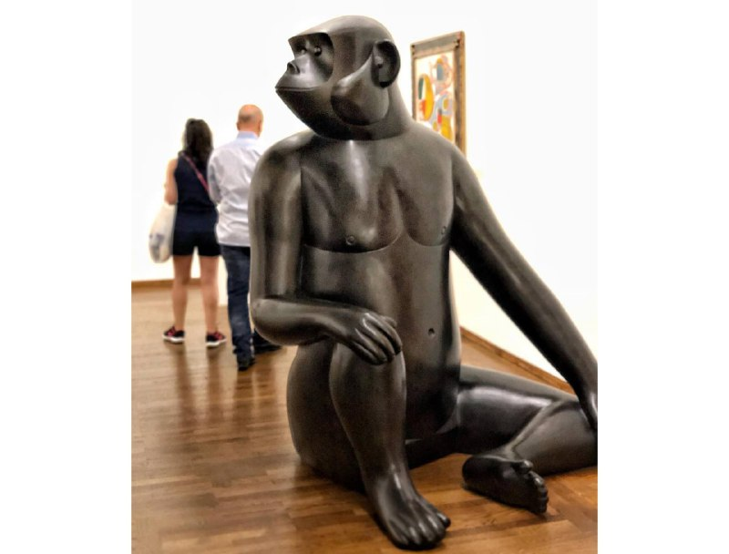

Если мы задаемся вопросом, а что такое культура, то ответов может найтись много и разных. В обыденном смысле мы как правило понимаем под культурой мировое художественное богатство, то есть искусство, фольклор и обычаи. Но в научном контексте такое определение не используется практически никогда… и не только потому, что необоснованно сужает предмет вопроса, но и потому, что такой подход искажает саму суть дела, вводя людей в опасное заблуждение.
Беда такого заблуждения в том, что оно создает ложную иллюзию наличия некой 1) объективной человеческой реальности, в виде конкретных поступков, событий и фактов, и 2) субъективной надстройки над ней, в виде идей, образов и интерпретаций (надстройки притягательной, но… не совсем обязательной; типа, прикольно конечно, но если что - никто не умрет). А правда заключается в том, что никакого такого разделения нет! И вся наша человеческая реальность изначально «культурна», то есть никаких поступков, событий и фактов вне пространства идей, образов и интерпретаций - просто не существует.
Когда-то давно, homo sapiens, в процессе своего перехода от «животного» состояния к «человеческому» был вынужден заменить природно-биологический императив каким-то другим способом ориентирования в окружающей среде. И таким способом стали - смыслы. Смыслы постепенно складывались в значения (обще-понимаемое), ценности (обще-важное) и нормы (обще-приемлемое)… и воплощались в намерениях, поступках, вещах и знаках. «Удвоение реальности», о которой писал 100 лет назад Кассирер как о ключевом свойстве человека, проходит не по линии естественного и художественного, не по линии реальности и фантазии, а по линии человеческого и нечеловеческого. По большому счету, всё, к чему прикасается и на что обращает свое внимание человек - всё включается в антропосферу. Это и есть культура, в неразрывном единстве своих элементов… как система средств, которые воспроизводят «человеческое» в человеческом. Ну, а во времени эта система разворачивается как история.
В таком разе, мне кажется очевидным, что понимание культуры только как совокупности художественных знаков, а истории только как хронологии поступков, событий и фактов - это утопия. Так, мы никогда и ничего не поймем - ни в наших предшественниках, ни в наших соседях, ни в самих себе. А понимать надо, ну хоть как-то… коль скоро, в основании «человеческого мира» лежат смыслы, а смыслы без понимания пусть и не умирают, но точно превращаются из «кельи» в «тюрьму».
К тому же, не менее очевидно, что единственно правильного понимания не будет. Ведь значения, ценности и нормы, проявленные в поведении, вещах и знаках - будут разниться от эпохи к эпохе, от общества к обществу. Это не значит, что истины не существует. Это значит, что истина в «человеческой реальности» (исходя из вышеописанного) предстает в лучшем случае как правда, то есть, как максимальное приближение к истине с позиции принятых «значений, ценностей и норм». Иначе говоря, правд может быть много.
А самое удивительное… выбор между множественными правдами (что есть неизбежное следствие культурной реальности как таковой) - это не столько вопрос знания и веры, сколько вопрос не-знания и воли.

